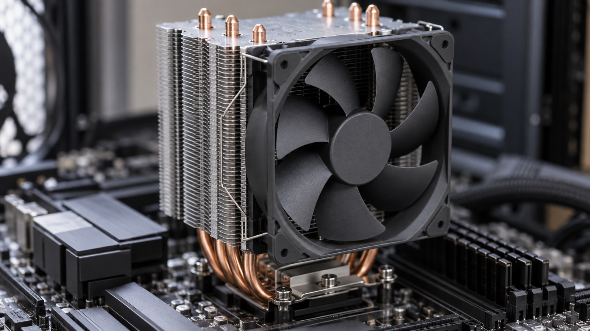
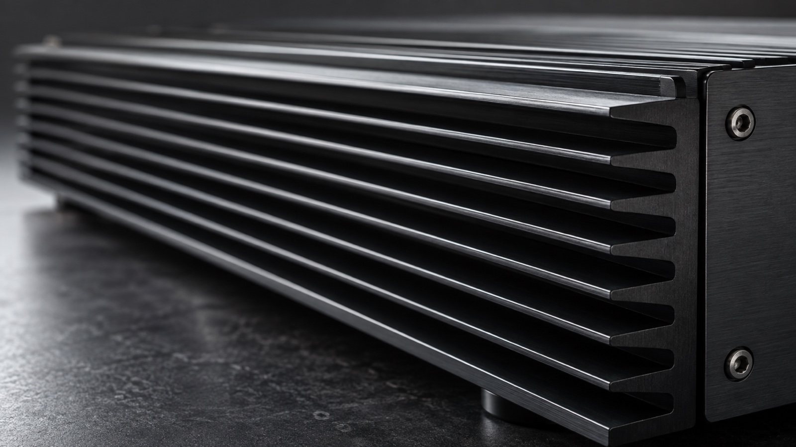

Image Capture Sheet - DAPR 2255 / power
Generated 2026-09-20. These images are sourced or captured, never generated. Save each file into the folder below using the exact filename shown, then reload this page.
How to use this sheet
- In Finder press Cmd+Shift+G, paste the destination path, press Return.
- Pull each image from the manual or capture it as described.
- Save it into that folder using the exact filename in the chip.
- Reload this page. Green cards are done, dashed cards are still open.
Destination folder:
/Users/adamwolson/Library/CloudStorage/Dropbox/apps/GitHub/Canvas/Classes/DAPR-2255--Audio_Hardware_I/Images/power/
Keep this sheet in Images/_briefs/. The previews point at ../power/, so they only resolve from there.
No manual on disk supplies any of these. The general manual library and the per-course manuals folder were both searched first, per Standards 20.6 step 1, and the folders where a fixture, switch or interface manual would sit are empty.
0 of 0 captured
01. Overview hero
The shot must show: A heat sink with a power device bolted to it, the mounting screw and the device body both visible, on a clean surface.
How to capture: Three quarter view so both the fins and the device face read. Even light, plain background.
 not saved yet
not saved yet../power/power-overview-hero-01.jpg
02. Heatsink CPU cooler
The shot must show: A modern CPU cooler, finned tower with a fan or a low profile cooler sitting on a motherboard, the fin stack clearly visible.
How to capture: Three quarter view, even light. No manufacturer branding needs to be legible; do not compose the shot around a logo.

not saved yet../power/power-heatsink-cpu-cooler-01.jpg
03. Heatsink amplifier chassis
The shot must show: The finned side or rear of a power amplifier chassis, close enough that the fin depth and spacing read. The rack is the obvious source.
How to capture: Shallow angle along the fins so the depth is visible rather than a flat stripe pattern. No model badges or serial plates in frame.

not saved yet../power/power-heatsink-amplifier-chassis-01.jpg
04. Heatsink device mounted
The shot must show: A TO-220 device bolted to a heat sink with the insulating washer and a trace of thermal compound visible at the joint, so the mounting interface is the subject of the shot.
How to capture: Macro or close crop, shallow angle across the joint. Plain background, even light, no shadow across the interface.
 not saved yet
not saved yet../power/power-heatsink-device-mounted-01.jpg